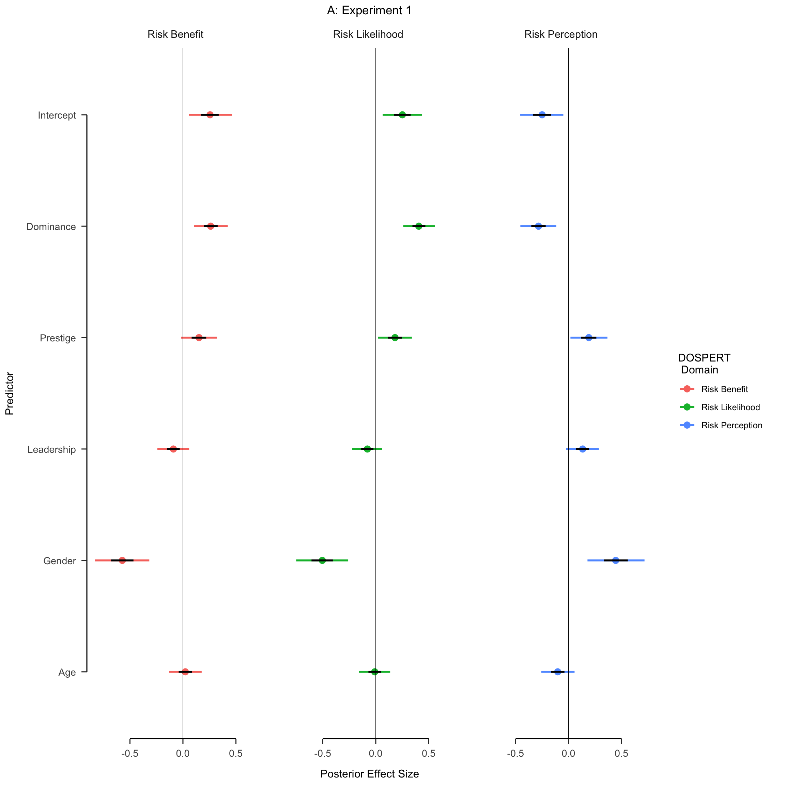
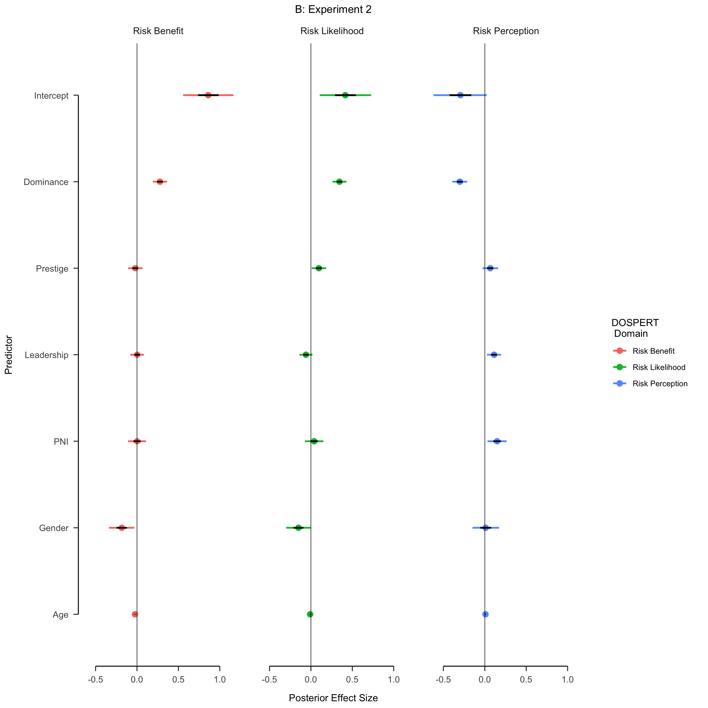

OSF
Overview
- Background:
- Risk and Decision-making
- Experiments 1 and 2
- Experiment 1: Intro to DOSPERT and DoPL
- Experiment 2: DoPL and DOSPERT with Narcissism
- Future directions
Background
Risk
- Risk is a fundamental part of life
- Different based on domain
- Financial, Health, Social, etc.
- Diifferences based on perspective
- Risky vs. Safe
- Loss vs. Gain
- Certainty vs. Uncertainty
- Different based on domain
The present experiments
Experiment 1
Experimental Design
Results
Experiment 2
Experimental Design
Results
